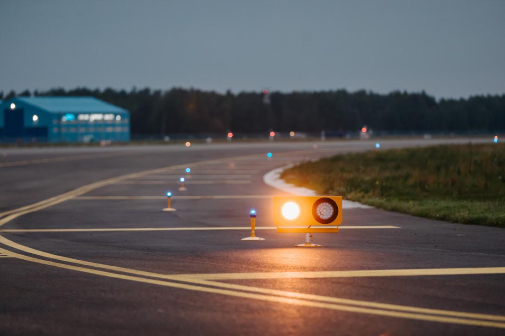

Our AI-powered rover scans runways 24/7, detecting cracks and wear with 99% accuracy.
Advanced analytics predict potential issues before they become critical, saving time and costs.
Instant notifications ensure timely repairs, reducing downtime and improving safety.
SKY DECCAN is a cutting-edge startup dedicated to transforming airport runway maintenance through automation and AI. Our mission is to enhance safety, reduce costs, and improve efficiency for airports worldwide.
With a focus on innovation, we’ve developed an autonomous rover equipped with state-of-the-art sensors and machine learning algorithms to revolutionize how runways are inspected and maintained.